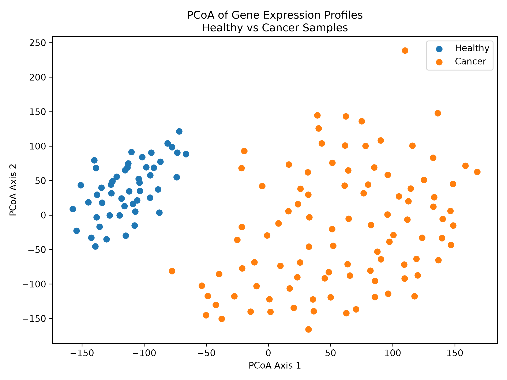

Higher in Cancer
Positive log₂ fold changes indicate genes with greater average expression in tumor samples.
What we found when we compared gene activity in healthy and colon cancer tissue.
Section 3: What We Found
Our analysis found many genes with statistically significant expression differences between healthy colon samples and colon tumor samples. Some genes were more active in cancer, while others were less active.
Positive log₂ fold changes indicate genes with greater average expression in tumor samples.
Negative log₂ fold changes indicate genes whose expression was lower in cancer samples.
Adjusted p-values help identify changes that remain meaningful after thousands of genes are tested.
The volcano plot summarizes all tested genes, the heatmap focuses on genes with some of the largest differences, and the PCoA compares overall expression patterns across samples.

Red points are significantly higher in cancer and blue points are significantly higher in healthy tissue. Points farther from the center have larger expression changes, and points higher on the graph have stronger statistical evidence.

Each column represents one tissue sample and each row represents one of the 50 selected genes. Red indicates higher activity and blue indicates lower activity.

This heatmap compares the average activity of the top 50 genes selected using Welch's t-test and labels each gene individually.

Each point represents one tissue sample. Healthy samples cluster together on the left, while most cancer samples group separately on the right. This separation shows that the two groups have different overall gene-expression profiles.
These examples connect individual expression changes to known biological functions. They are research findings, not stand-alone diagnostic markers.
MYC encodes a transcription factor that helps control the activity of other genes and is closely connected to cell growth and division.
CLDN1 produces claudin-1, a component of tight junctions that helps form barriers between neighboring epithelial cells.
AQP8 encodes a membrane channel involved in transporting water and other small molecules across cell membranes.
GUCA2B encodes uroguanylin, a signaling molecule that activates guanylate cyclase and contributes to normal intestinal signaling.
This analysis is not a replacement for current colon cancer screening or diagnostic methods. Its greatest potential comes after a patient has already been diagnosed.
A tumor's expression profile can add information about its biology and possible growth behavior. Doctors may combine this information with established clinical evidence when discussing treatment options.
Expression patterns may help researchers study why tumors respond differently to chemotherapy and investigate which treatments are most promising for particular tumor profiles.
Differentially expressed genes can uncover disrupted genetic pathways, giving researchers new biological targets to investigate when developing future cancer drugs.